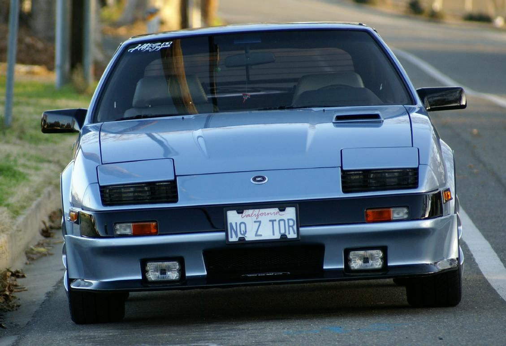
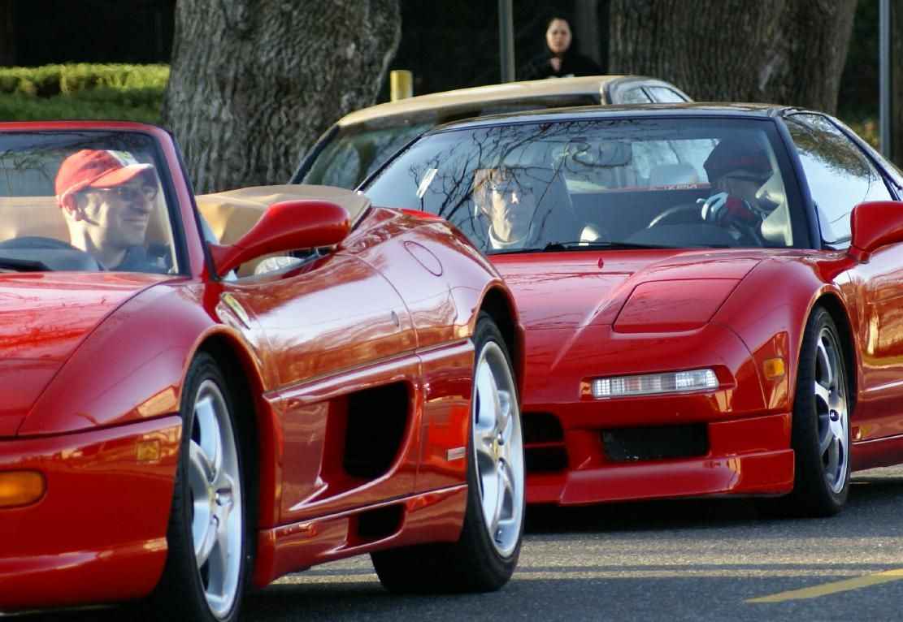
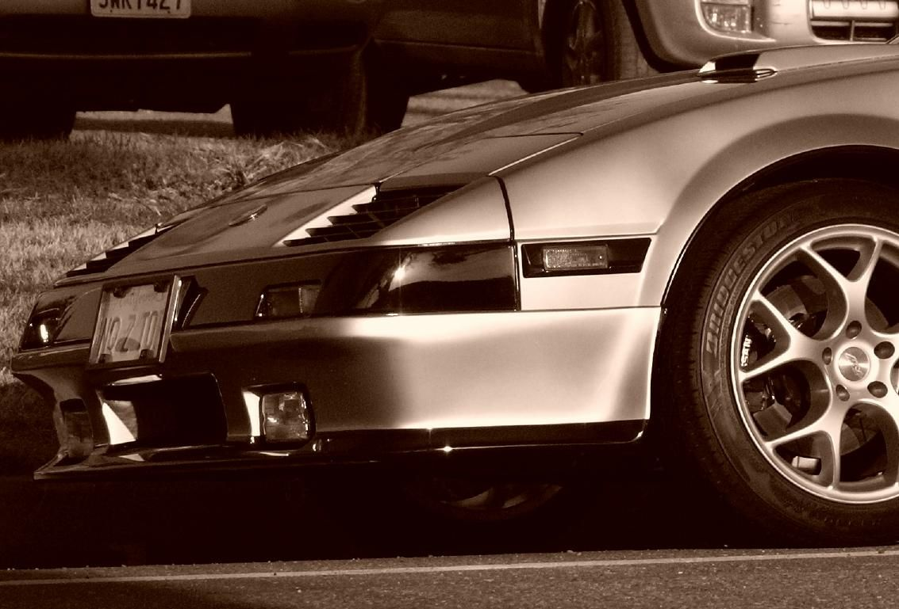
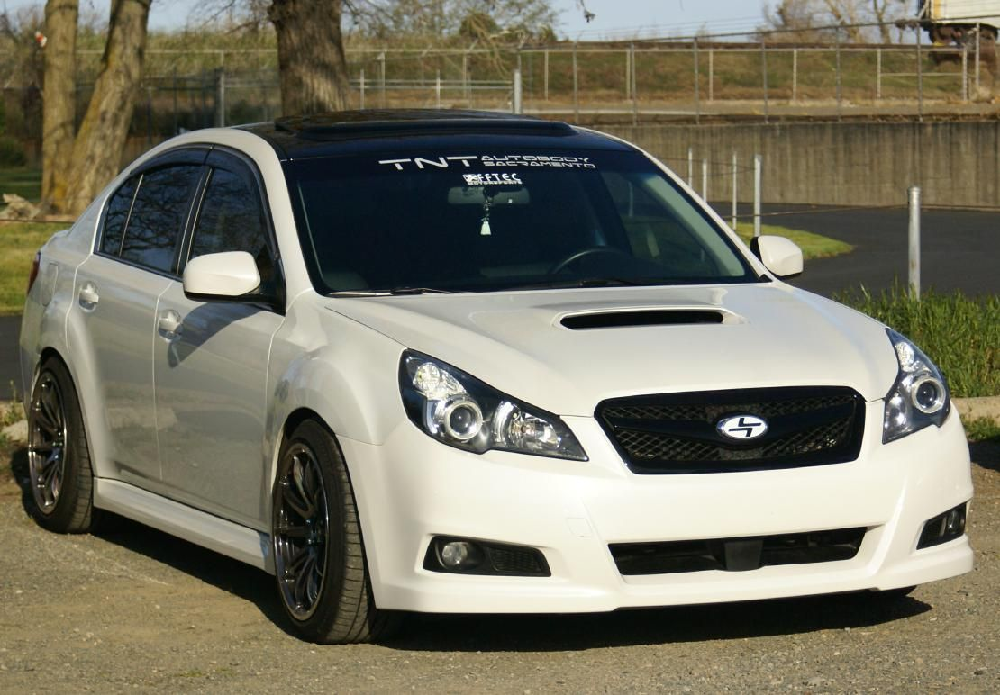
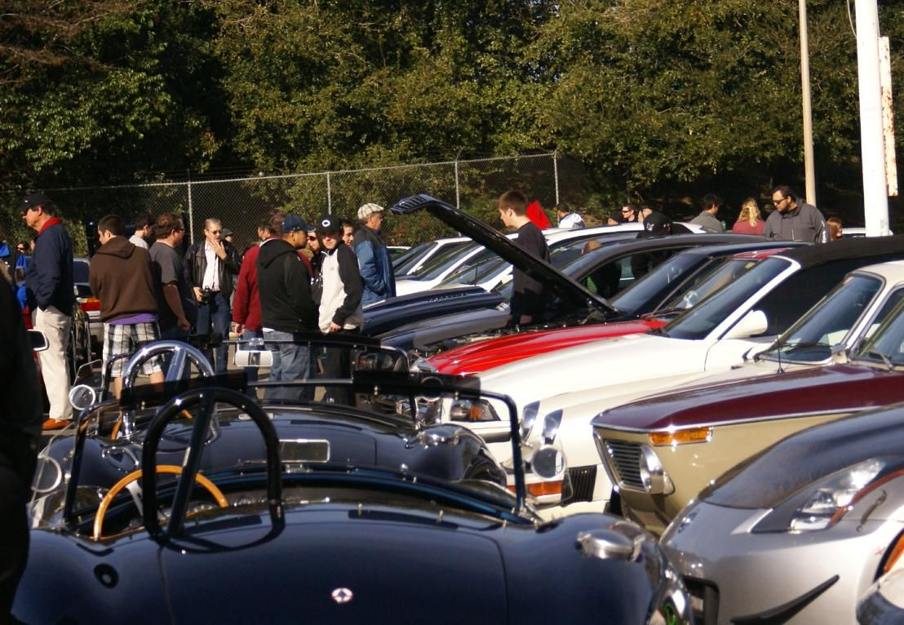
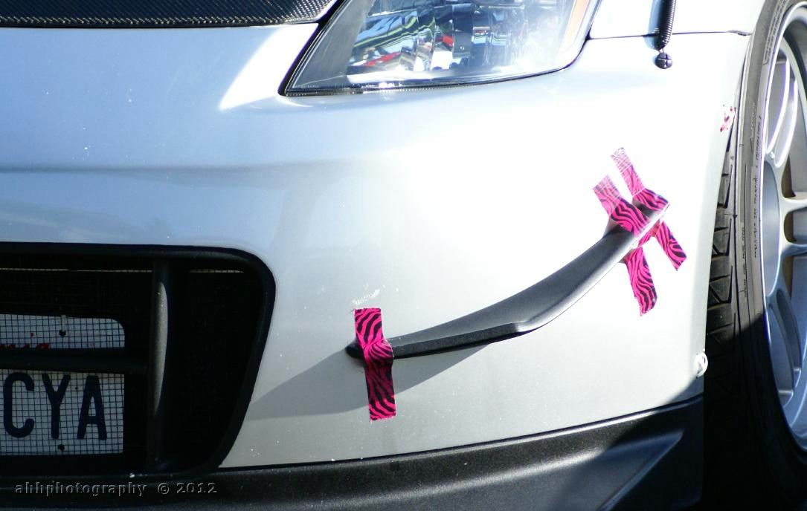
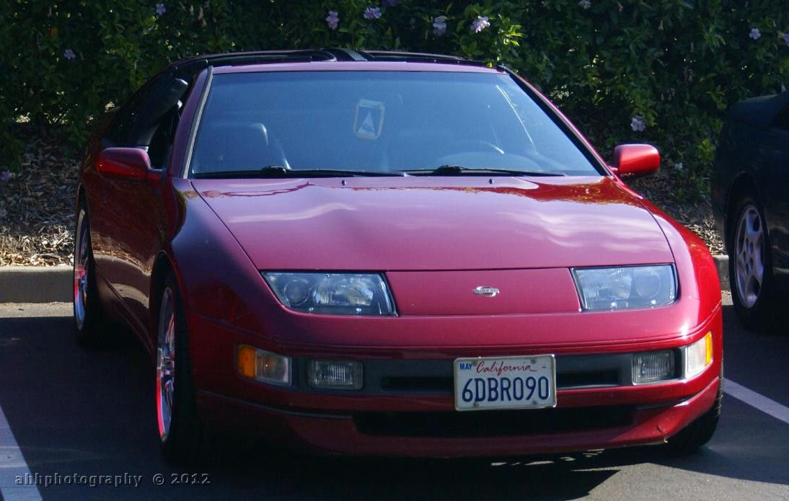
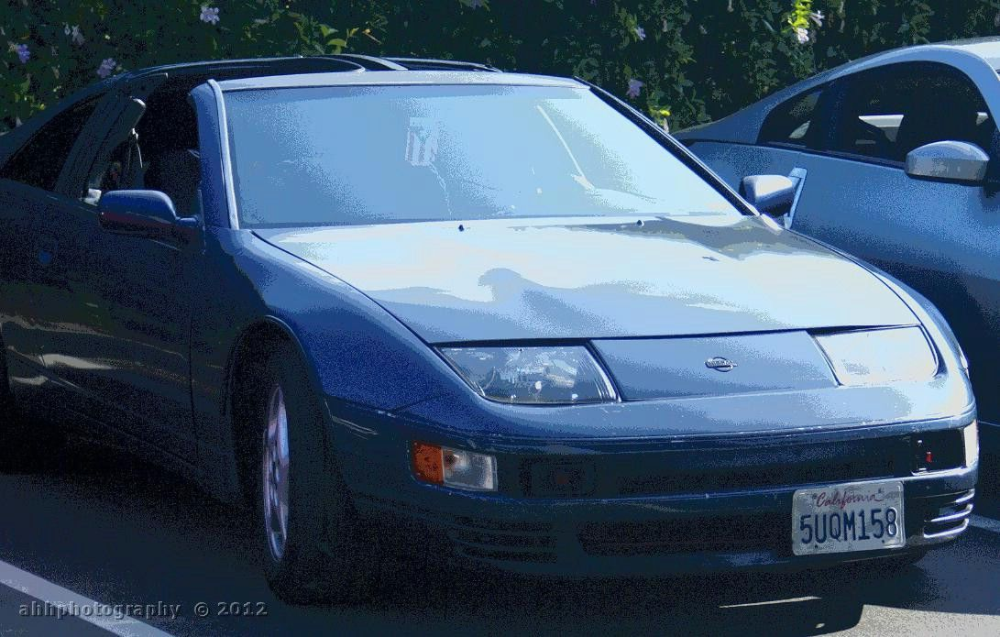
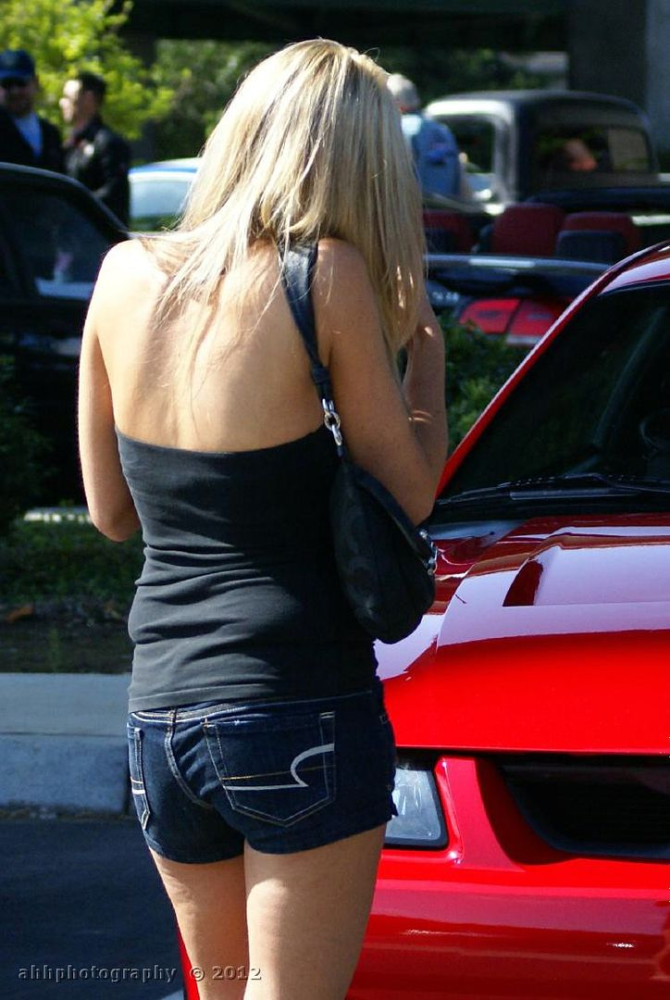
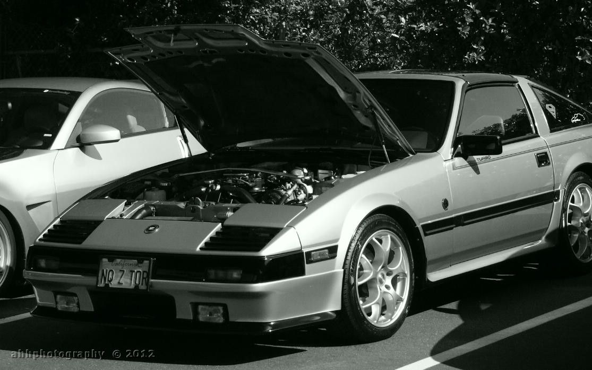

-
This thread will feature pics from the various EuroSunday (ES) - Sacramento events throughout 2012.
The following is from the 26 February "ES-Sacramento" at the California Auto Museum in Sacramento, CA.
Yup .. my z31 ..

I decided to get to the museum early (7:15AM) and park on the street (vs the museum parking lot). It was a good decision. There were so many cars (150+) that the museum's parking lot got filled to capacity. Cars were double to triple parked deep and into the overflow (gravel) area AND onto the streets.

This is my FB "cover" …



Link to the rest ..
http://photobucket.com/esFEB12
Be sure to check the 2012 EuroSunday Events thread for information about the next ES-Sacramento event.
viewtopic.php?f=17&t=32357 -
Re: Some pics from today's EuroSunday meet ..
From the 22 April 2012 EuroSunday at The Fountains in Roseville, CA
more at …
http://www.eurosunday.net/images/2012/a … index.html
http://www.eurosunday.net/images/2012/a … index.html
http://www.eurosunday.net/images/2012/a … index.html -
Re: Some pics from today's EuroSunday meet ..
EuroSunday went back to the California Automobile Museum this morning .. we were joined by "Vettes for Vets"
Here is a small sampling of pics …





Link to a few more .. the rest will be up on the EuroSunday website ..
http://s15.photobucket.com/albums/a361/ … 205272012/
Pics via the EuroSunday site …
http://www.eurosunday.net/images/2012/m … index.html -
Re: Some pics from today's EuroSunday meet ..
Nice Z31.
I love your tast and how you did it.71 240Z 5speed
83 280ZX T 5speed
93 300ZX TT 5speed -
Re: Some pics from today's EuroSunday meet ..
A few pics from Sunday's event
Stillen Super-charged 370Z … and yes I got to drive her!
This GT-R had a baby carrier/seat in the back!
One of about 6 that were there ..
That's all for now .. more pics will be available via the EuroSunday website …


Copyright © 2006–. All rights reserved. Privacy Policy